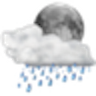

The WUnderground plugin provides a facility to use weather-based icons on control pages. It provides several device states that are designed to help with displaying weather-based icons:
You must provide the icons (the picture files) that will be displayed. Indigo does not ship with images structured for the WUnderground plugin.
It is important that you follow a very specific naming convention for the icons that will be displayed. If you don't follow the proper format, the images won't display as you expect. To begin, find an image that you want to use--a sun for example--and give it a name followed by "+.png". Obviously, it needs to be a PNG graphic file. Name it thusly:
You don't have to use "weather", but you should use something appropriate that you will recognize. "WUnderground+.png" is an excellent choice. ("Bob+.png" will work, but seems odd...) This will be the default image that is displayed when no other image file matches the weather. All other daytime (and All Day) icon names use the following format:
| weather+clear.png | weather+cloudy.png | weather+rain.png |
|---|---|---|
Nighttime icon names have the following format:
| weather+nt_clear.png | weather+nt_cloudy.png | weather+nt_rain.png |
|---|---|---|
|  |
The forecast condition values are slightly different, but the convention is the same. There are no nighttime forecast icons. The filenames are intentionally different so that one set of icons can be used for current conditions and another for forecasts (you might want smaller forecast icons, for example.)
| forecast+clear.png | forecast+cloudy.png | forecast+chancestorms.png |
|---|---|---|
 |
Images should be stored in the following directory (note that X represents the Indigo Version Number:
/Library/Application Support/Perceptive Automation/Indigo X/indigoWebServer/images/controls/devices
There is a full icon set available via the Indigo File Library, located here:
http://forums.indigodomo.com/viewtopic.php?f=149&t=13865
Weather Underground provides several sets of icons that you can use if you wish, located here:
http://www.wunderground.com/weather/api/d/docs?d=resources/icon-sets
The complete list of condition and forecast phrases that Weather Underground could provide is located here:
http://www.wunderground.com/weather/api/d/docs?d=resources/phrase-glossary [1]
You can find lots of icons online that are free to use (I use icons from the Icon Archive)
To use the icons in a control page, insert a new control with the following settings:
and set the remainder of the settings as you wish. Here's another example (for today's forecast icon):
and Indigo will take care of the rest. Once you get the hang of it, it's actually very straightforward and you can extend the functionality even further. You might use icons for the
chance of precipitation (precip+.png, precip+10.png, precip+20.png, ...) or for wind direction (wind+.png, wind+North.png, wind+NNE.png, ...) Go nuts!
For more information on Indigo Image naming conventions, see the Indigo Image Heuristics Wiki Page:
[1] Note that the WUnderground plugin does not use all of these values. Presently, it uses Wind Direction, Current Condition and Forecast values